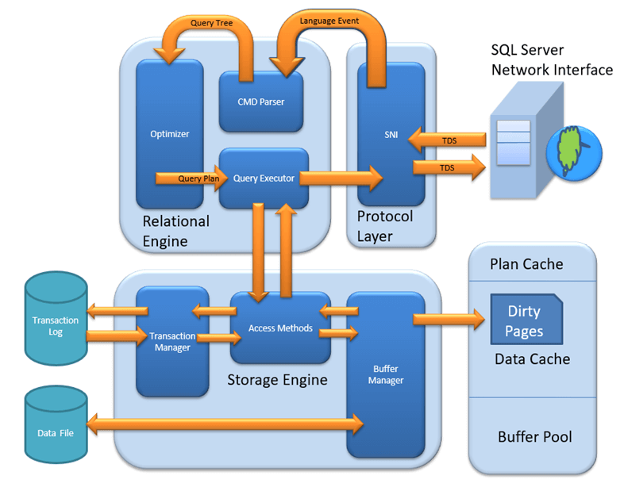

Architecture of SQL Server
The general architecture of SQL Server, which has 4 major components
1.Protocols,
2.Relational engine (also called the Query Processor),
3.Storage engine,
4. SQLOS.
Each Every instruction & batch submitted to SQL Server for execution, from any client application, must interact with these four components.
The protocol layer receives the request from the end client and translates it into the form where SQL Server relational engine can understand and work on it.
The query processor accepts the T-SQL batches processes and executes the T-SQL batch. If data is required the request is passed to Storage Engine.
The Storage Engine manages the data access and service the requested data.
The SQLOS takes responsibility of operating system and manages locks, synchronization, buffer pool, memory, thread scheduling, I/O etc.
A Basic select Statement Life Cycle Summary

Figure shows the whole life cycle of a SELECT query, described here:
1. The SQL Server Network Interface (SNI) on the client established a connection to the SNI on the SQL Server using a network protocol such as TCP/IP. It then created a connection to a TDS endpoint over the TCP/IP connection and sent the SELECT statement to SQL Server as a TDS message.
2. The SNI on the SQL Server unpacked the TDS message, read the SELECT statement, and passed a “SQL Command†to the Command Parser.
3. The Command Parser checked the plan cache in the buffer pool for an existing, usable query plan. When it didn’t fi nd one, it created a query tree based on the SELECT statement and passed it to the Optimizer to generate a query plan.
4. The Optimizer generated a “zero cost†or “trivial†plan in the pre-optimization phase because the statement was so simple. The query plan created was then passed to the Query Executor for execution.
5. At execution time, the Query Executor determined that data needed to be read to complete the query plan so it passed the request to the Access Methods in the Storage Engine via an OLE DB interface.
6. The Access Methods needed to read a page from the database to complete the request from the Query Executor and asked the Buffer Manager to provision the data page.
7. The Buffer Manager checked the data cache to see if it already had the page in cache. It wasn’t in cache so it pulled the page from disk, put it in cache, and passed it back to the Access Methods.
Example-:The following query will give you the space occupied by each database in the memory in mb.
SELECT COUNT(*)*8/1024 AS ‘cached_size_(mb)’
,CASE database_id
WHEN 32767 THEN ‘ResourceDb’
ELSE db_name(database_id)
END AS ‘database_name’
FROM sys.dm_os_buffer_descriptors
GROUP BY DB_NAME(database_id) ,database_id
ORDER BY cached_size_(mb)’ DESC;
Example-:the following dmv will give the information for each data pages in the buffer pool in the form of one row for each page.
select * from sys.dm_os_buffer_descriptors
Example-:the following query will clean some part of the buffer pool.
dbcc dropcleanbuffers
8. Finally, the Access Methods passed the result set back to the Relational Engine to send to the client.
When Checkpoint occurs:
Manual checkpoint command fires
Auto check point
Backup command fired
Alter database command
SQL Server shutdown
Cluster failover
Snapshot is created
Commit is issued.